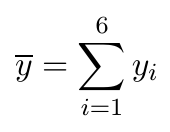

The Detector Channel View displays (and allows to modify) properties of a channel. The channel being shown is the one selected in the Scan Module View.
Generally a channel has one of three modes which determines its behavior. Depending on the channel mode the Detector Channel View will show different properties. These properties are described in detail for each mode in the following subsections.
The standard mode as the name suggests is the one most commonly used. Several properties can be set. The image below shows an example of a channel in standard mode followed by a short description of each property.
Average : Determines how many channel readings are taken to calculate the average.
Max Deviation (%): The deviation of the first two measured values must be less or equal then the given value in percent to be valid. If that constraint ist not fulfilled, the first measured value is discarded and a new value is taken until the condition is met.
Minimum: If the first measured value is greater than or equal the given value a tolerance check is conducted.
Max. Attempts: If the tolerance check failed the given value amount of times, the check is stopped an the next values are used for the average calculation.
Normalize Channel: The channel is normalized by the given channel. The calculation of the deviation is based on the normalized value.
Deferred Trigger: If set, this channel is triggered after all other channels in the same scan module (which are not deferred) are read.
Redo: Events which when occurring restart the channel calculation are defined here. A more detailed description about events can be found here.
The following subsections illustrate the standard mode behavior by examples.
Average = ∅, Max. Deviation (%) = ∅, Minimum = ∅, Max. Attempts = ∅
Average omitted ⇒ no average is calculated.
Average = 3, Max. Deviation (%) = ∅, Minimum = ∅, Max. Attempts = ∅
Minimum omitted ⇒ Average is calculated from three subsequent measurements.
measured values: {0.00197, 0.00199, 0.00153} ⇒ Average = 0.00183
Average = 3, Max. Deviation (%) = ∅, Minimum = 1.0, Max. Attempts = ∅
measured value: -0.898492 ⇒ value is less than Minimum ⇒ Average is calculated from three subsequent measurements.
measured values: {-0.898492, -0.900868, -0.906199} ⇒ Average = -0.901853
Achtung, bisher (Version 1.7) wird hier nur 1 Messwert aufgenommen
Average = 3, Max. Deviation (%) = ∅, Minimum = 0.0001, Max. Attempts = ∅
measured values: {0.00197, 0.00199, 0.00153} ⇒ Average = 0.00183
Average = 3, Max. Deviation (%) = 5, Minimum = 0.3, Max. Attempts = 10
measured values: {4.231, 4.787, 4.687, 4.732}
Max. Deviation (%) from 1 and 2: 13.14 => discard first value
Max. Deviation (%) from 2 and 3: 2.09 => Deviation is OK
⇒ value of the channel is the Average from 2., 3. and 4. point: = 4.735
Average = 3, Max. Deviation (%) = 0.5, Minimum = 1e-8, Max. Attempts = 5
measured values: {4.231, 4.787, 4.687, 4.732, 4.894, 4.738, 4.834, 4.963)
Max. Deviation (%) from 1 and 2: 13.14 => discard first value
Max. Deviation (%) from 2 and 3: 2.09 => discard second value
Max. Deviation (%) from 3 and 4: 0.96 => discard third value
Max. Deviation (%) from 4 and 5: 2.09 => discard fourth value
Max. Deviation (%) from 5 and 6: 3.42 => discard fifth value
Max. Attempts reached ⇒ value of the channel is the Average from 6., 7. and 8. point: = 4.845
Achtung, bisher (Version 1.7) wird hier nur 1 Messwert aufgenommen (der 6. Wert)
The interval mode calculates a mean of values measured on a given interval until another channel is done. The resulting data file contains only one measurement, the mean (aside of some additional information such as the standard deviation). The image below shows an example of a channel in interval mode followed by a short description of each property.
Normalize Channel: The channel is normalized by the given channel. The calculation of the mean is based on the normalized value.
Trigger Interval: The interval/rate measurements are taken.
Stopped By: The channel which when finished stops the mean calculation.
Let y i be the i-th measurement, x i the timer in seconds, the trigger interval two seconds and the stop event trigger at eleven seconds.
Then the measurements taken are (0, y 1), (2, y 2), (4, y 3), (6, y 4), (8, y 5), (10, y 6) and the mean is

Reconsider example 1 extended by a normalization channel z.
Then the measurements taken are (0, y 1/z 1), (2, y 2/z 2), (4, y 3/z 3), (6, y 4/z 4), (8, y 5/z 5), (10, y 6/z 6) and the mean is
Take into account that in interval mode only the mean value (alongside the number of measurements and the standard deviation) is written to the data file.
the normalize mode is a special mode. It does not have any properties at all. It just indicates that the selected channel is used for normalization by another channel (or channels). The properties are derived from the channel it normalizes. The image below shows an example of a channel in normalize mode.
Consider the following Situation. „Channel A” is defined in standard mode with average set to 1 and normalized by another channel called „Channel B”. Additionally a motor M with three positions (m i being the i-th position) is declared.
When selecting Channel B in the Scan Module View the Detector Channel View would show only disabled controls with the hint that Channel B is used as normalize channel by Channel A.
The measurements taken are (m 1, A 1/B 1), (m 2, A 2/B 2), (m 3, A 3/B 3).
Consider example 1 but with average set to 3.
The measurements taken are (m 1, A 1/B 1), (m 2, A 2/B 2), (m 3, A 3/B 3) at which each A i/B i is the average calculated by three measurements.
Consider „Channel A” (standard mode with average set to 1) and „Channel B” (standard mode with average set to 2), both normalized by „Channel C”. Additionally a motor M with three positions (m i being the i-th position) is declared.
The measurements taken are